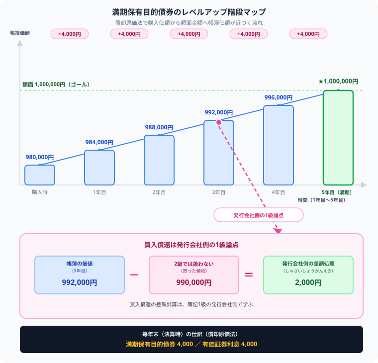

簿記2級の社債とは？
満期保有目的債券の償却原価法を解説
こんにちは、若葉です！
実は、今回紹介する社債の「満期保有目的債券」と「償却原価法」は、私が大学の講義で初めて解いたとき、980,000円で買った債券の帳簿価額が、なぜ毎年4,000円ずつ増えるのか分からず、「うわっ、なんじゃこりゃ！！」と本気で脳がバグった論点でした（笑）。
「安く買ったのに、なぜ利息を受け取るたび帳簿価額が増えるのか」を、購入者側の仕訳として時系列で整理すると、仕組みが見えます。この記事では、簿記2級の範囲に合わせて、買う側の処理に絞って解説します。
読み終えたら、980,000円から1,000,000円までの帳簿価額の動きを、自分の言葉で1行にまとめてみてください。
社債は会社が資金調達のために発行する債券で、簿記2級では投資家側の「満期保有目的債券」として扱います。購入時・利息受取時・決算時・満期償還時の仕訳と、額面との差額を配分する償却原価法が重要です。発行会社側の社債は1級の範囲です。
社債とは
社債を買った側では、購入時・利息受取時・決算時・償還時で仕訳が変わります。額面未満で購入した場合は、償却原価法で帳簿価額を額面まで段階的に引き上げていきます。
社債とは、株式会社が資金を調達するために発行する債券です。発行会社は満期に額面金額を返済し、投資家は利息を受け取ります。投資家側では、購入した社債を資産として処理します。
発行会社側の「社債」勘定や社債発行の仕訳は、2026年度の商工会議所出題区分表では1級の論点です。2級の記事では、購入者側の満期保有目的債券と混同しないことがポイントです。
社債の基本用語
| 用語 | 意味 |
|---|---|
| 額面金額 | 満期に投資家へ返済される金額 |
| 購入価額 | 投資家が社債を買うために支払った金額 |
| 利率 | 額面金額に対する利息の割合 |
| 償還 | 満期に額面金額の返済を受けること |
| 償却原価法 | 購入価額と額面金額の差額を保有期間に配分する方法 |
額面で購入したときの仕訳
額面1,000,000円の社債を同額で購入し、満期保有目的債券として処理する場合は、次のように仕訳します。
| 借方 | 金額 | 貸方 | 金額 |
|---|---|---|---|
| 満期保有目的債券 | 1,000,000 | 現金預金 | 1,000,000 |
投資家は1,000,000円を支払い、満期に1,000,000円の返済を受ける権利を持ちます。
額面未満で購入したとき
額面未満で購入するとは、額面1,000,000円の社債を980,000円で買うケースです。投資家は980,000円を支払いますが、満期には1,000,000円の返済を受けます。
差額20,000円は、保有期間に対応する実質的な利息として扱います。
額面より安く買った投資家は、利払日に受け取るクーポン利息に加えて、満期に額面との差額も受け取ります。差額20,000円は、5年間に対応する利回りの一部です。だから、償却原価法では毎年少しずつ帳簿価額へ加算します。
額面未満で購入したときの仕訳
額面1,000,000円の社債を980,000円で購入した場合、購入価額で満期保有目的債券を計上します。
| 借方 | 金額 | 貸方 | 金額 |
|---|---|---|---|
| 満期保有目的債券 | 980,000 | 現金預金 | 980,000 |
その後、償却原価法により、満期保有目的債券の帳簿価額を満期までに額面金額へ近づけていきます。
利息を受け取ったときの仕訳
額面1,000,000円、年利2%、利払日が年1回なら、受け取るクーポン利息は20,000円です。
| 借方 | 金額 | 貸方 | 金額 |
|---|---|---|---|
| 現金預金 | 20,000 | 有価証券利息 | 20,000 |
償却原価法

償却原価法とは、購入価額と額面金額の差額を保有期間に配分する方法です。額面未満で購入した場合、満期保有目的債券の帳簿価額を少しずつ増やし、その増加額を有価証券利息として処理します。2級では定額法を押さえ、発行会社側の社債の利息法・定額法は簿記1級の社債論点として区別してください。
額面1,000,000円、購入価額980,000円、保有期間5年の場合、差額20,000円を5年で配分すると、毎年4,000円ずつ帳簿価額を増やします。980,000円から1,000,000円へ近づく流れを、購入者側の資産の変化として追うのがポイントです。
| 借方 | 金額 | 貸方 | 金額 |
|---|---|---|---|
| 満期保有目的債券 | 4,000 | 有価証券利息 | 4,000 |
この仕訳により、満期保有目的債券の帳簿価額は980,000円から984,000円へ増えます。満期まで続けると、帳簿価額が額面金額に近づきます。
満期償還を受けたときの仕訳
満期になったら、投資家は額面金額の返済を受けます。満期保有目的債券の帳簿価額が1,000,000円になっている場合は、次のように仕訳します。
| 借方 | 金額 | 貸方 | 金額 |
|---|---|---|---|
| 現金預金 | 1,000,000 | 満期保有目的債券 | 1,000,000 |
発行会社側の買入償還は1級
満期前に発行会社が自社の社債を買い戻す「買入償還」は、発行会社側の処理です。簿記2級の満期保有目的債券と混ぜず、詳しい仕訳は簿記1級の社債論点として学びます。
よくあるミス
- 購入者側なのに「社債」勘定を負債として処理してしまう
- 発行会社側の処理と投資家側の処理を混同する
- 額面未満で買ったときに、購入価額ではなく額面金額で計上してしまう
- 償却原価法の調整額を有価証券利息に含め忘れる
- 満期償還時に満期保有目的債券を消し込むのを忘れる
まとめ
- 2級の社債は、投資家側の満期保有目的債券として学ぶ
- 購入時は、支払った購入価額で満期保有目的債券を計上する
- 額面未満で購入した差額は、有価証券利息として保有期間に配分する
- 償却原価法では、帳簿価額を満期までに額面金額へ近づける
- 発行会社側の社債発行・買入償還は、簿記1級の論点として区別する
- 社債は「980,000円→984,000円→…→1,000,000円」という時系列の物語として一本の線でつなげて理解できれば、簿記2級では確実な得点源になる